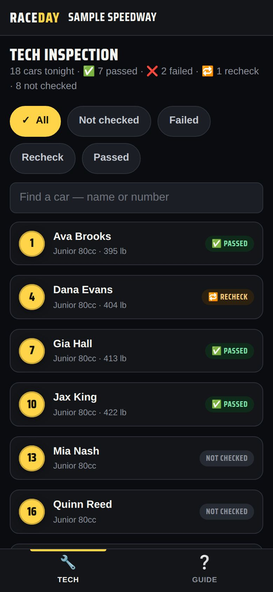
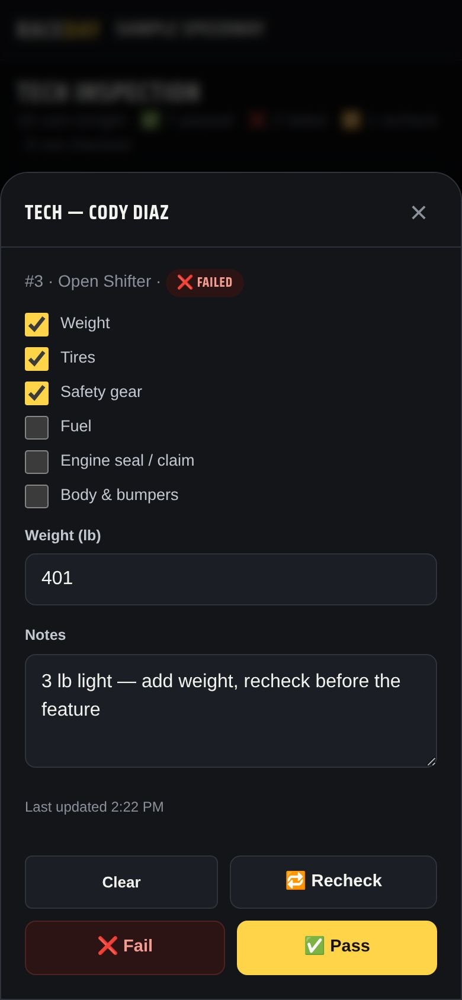

-
Set up the device
On the main device, open Admin → Race night → Tech inspection. For a separate tablet, start sync and send it the Tech inspection link — that tablet shows only the tech list.

Tech inspection -
Find the car
Filter by Not checked, Failed, Recheck or Passed, or search a name or number. The counts at the top show where you are.
-
Inspect and record
Tap the car. Tick each checklist item, type the weight in pounds, and add notes. Then tap ✅ Pass, ❌ Fail or 🔁 Recheck. Clear wipes it.

A car in tech -
The tower sees it
Results sync to every staff device. In Admin → Today's entries, a ✅ ❌ or 🔁 sits next to each driver.
-
Change the checklist
On the main device, open Edit checklist under the list — one item per line — and tap Save checklist. The default is weight, tires, safety gear, fuel, engine seal / claim, and body & bumpers.
Good to know
- Only the admin, a controlling operator and the tech tablet can change results; spectators never see them.
- Each archived night keeps a tech summary per class. A new race day starts with a clean list.
Next guides
Still stuck? The Field Manual walks through every screen, and the FAQ covers common questions. Or just text me — it's the fastest way to get an answer.
💬 Text Josh · (260) 207-4983 →or email